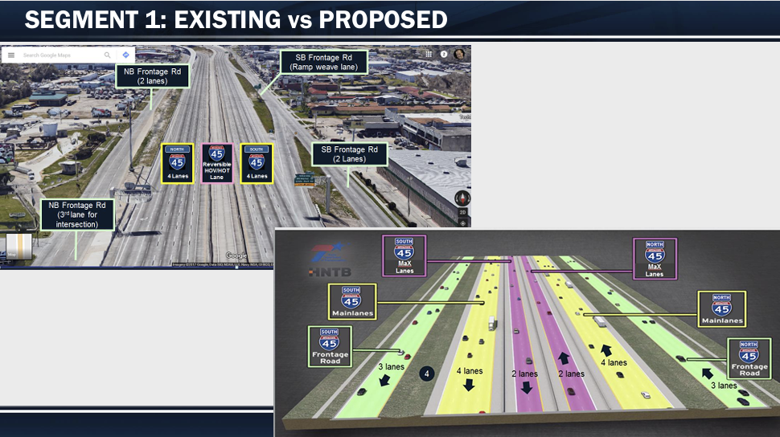

CEID provides comprehensive roadway design services for transportation and infrastructure projects across Texas. Our experienced engineering team develops safe, efficient, and sustainable roadway solutions that meet client objectives while complying with local, state, and federal design standards.
We work closely with public agencies, municipalities, and private clients throughout every phase of project development—from planning and preliminary engineering to final design and construction support. Our focus is on delivering high-quality designs that improve mobility, enhance safety, and support long-term community growth.
Using industry-leading design tools and engineering best practices, CEID delivers innovative, cost-effective roadway solutions that help clients successfully complete projects on time and within budget while ensuring safety, functionality, and long-term performance.
